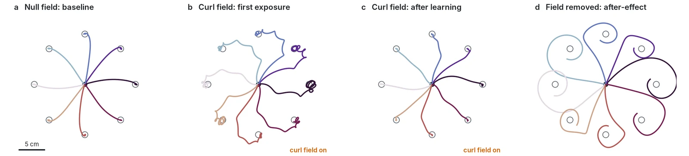

A Neural Network Motor Cortex That Adapts Like People Do
TL;DR
Question. People adapt to a force field that pushes on their hand: their reaches straighten, then curve the other way when the push stops. Can a network trained only to reach well do the same, and can it do it on a real robot?
Approach. A recurrent network controls a model human arm with six muscles and realistic sensory delays, trained by passing gradients through the arm’s physics, and then goes through the classic experiment. Trained across many force fields and frozen, it adapts from memory alone.
Result. It adapts the way people do, after-effect included. With its weights frozen, it adapts within an episode in simulation, and now on a real Franka Panda.
The experiment
In a classic experiment (Shadmehr and Mussa-Ivaldi, 1994), people reach to targets while a robot pushes their hand sideways, harder the faster they move. At first their reaches curve. With practice they straighten. When the push is switched off, their reaches curve the other way: the brain has learned to expect the force, and keeps counteracting it after it is gone.
I trained a recurrent network to control a simulated arm with six muscles, with realistic delays in what it sees and feels. It is only asked to reach accurately with little effort, and it never meets the force field during training. Then it goes through the same experiment.

The network reproduces the classic signatures: smooth, bell-shaped hand speeds, adaptation, and a mirror-image after-effect. Measuring the force it produces shows it learns to predict the push rather than simply stiffening the arm, which is also what people do.
On a simulated robot
Trained the same way, a network sending torques to a seven-joint Franka Panda in simulation goes through the same protocol and adapts the same way.
Adapting without learning
So far, adapting means learning: the network’s weights change over many reaches. I then trained it across many random force fields and froze it. Facing a field it has never seen, it adapts from memory alone, using how its last reaches went.
Its sideways error at peak speed falls from 8.5 to 2.6 mm after a single reach. A classical adaptive controller (Slotine and Li), told the exact form of the field, needs about five reaches and 6.4 times the effort. Memory is what does it: a network with the same training but no memory does not adapt. When the field is switched off, it errs the other way, a mirror-image after-effect as in people. It is only as general as its training, though: under a constant push, a force it never trained on, its adjustments make things worse.
On the real robot
A version of this network, retrained in simulation on randomized robot dynamics, now drives a real Franka Panda from inside its 1 kHz torque controller, with its weights frozen. A virtual force field pushes the hand sideways, like the robot handle in the human experiments, and the reaches straighten out over the episode without any retraining.
How much it adapts, measured over 20 pairs of episodes. In each pair the arm makes the same six 6 cm reaches twice, once with a 35 N·s/m curl field and once without. The table shows the extra sideways error the field causes at peak speed (field minus no field), averaged over the 20 pairs.
| reach | extra sideways error | 95% interval |
|---|---|---|
| 1 | 2.69 mm | 2.47–2.93 |
| 2 | 2.01 mm | 1.33–2.66 |
| 3 | 1.26 mm | 0.49–1.96 |
| 4 | 1.97 mm | 1.54–2.47 |
| 5 | 1.56 mm | 1.01–2.07 |
| 6 | 0.86 mm | 0.45–1.28 |
From the first reach to the last two, the error drops by 1.49 mm (95% interval 1.11–1.81 mm), with the network’s weights frozen the whole time. I wrote the prediction down before the session: the simulation expected a drop of 0.6–1.0 mm, so the real arm adapted more than predicted. Peak hand speed stays at 0.31–0.34 m/s with and without the field, so the reaches are not straighter because they are slower. All 40 episodes ran without a safety stop.
Getting there
The first run shook itself into the safety limits after 0.68 s, with the hand swinging 31 mm up and down: the real arm responds to torque more sluggishly than the simulator assumed, possibly because its joints are slightly elastic. Adding damping in the controller fixed it. The swing fell to 7.5 mm and the reaches ended 2–4 mm from their targets, at the cost of reaches about 30% slower than in training. Before it ever moved the arm, the C++ controller was checked against the Python policy (torques matched to within 10−13 N·m) and run in a simulated loop built from the same source.
Next: an internal model?
In simulation, switching the field off makes the frozen network err the other way, a sign that it predicts the push. The real-robot test is under way: in a session whose predictions were written down beforehand, the field switches off on the last reach without warning. Curving the other way would mean the network has learned to predict the push, as people do. Going straight would mean it is only reacting faster or holding stiffer.
The code is on GitHub under the MIT licence: training in JAX and MuJoCo MJX, the C++ controller that runs on the Panda with its tests, and the predictions written down before the robot sessions. The network is trained by passing gradients through the arm’s physics, then runs on the real robot unchanged.